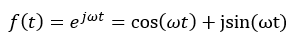

小鼠day8-小波变换理论+method整理
Day8 计划是梳理一下小波变化的理论和作用，之后再把一些文章中的方法整合一下
chat with kiya
简单聊了一下最近看的paper，展示了一下小鼠的那一篇，老板给的意见是nueron的影响因子大概在18.6，属于比较中规中矩的文献，可以多搜罗一些nature方面的paper。同样提出卢策吾也做过小鼠实验，就发在Nature上，我大致搜索了一下，那篇paper大致想表达的是在小鼠大脑中存在比较天然的“社会结构”，也就是会根据一些特征自动地区分彼此之间的社会等级，低等级的小鼠会优先让高等级的小鼠进行进食，确实是挺有意思的一个设定，但这个和我们想做的也是挺有区别的，恐怕可参考的地方不多。
这里也提出了一个疑问，就是我们的setting是不是和havard那篇小鼠的paper有一些太像了，我们的立足点在什么地方呢，除了把其中的一些方法换成比较新的还能有哪些改进？
除此之外，kiya还给了一点建议，可以让我去找一些灵长类动物的paper看一下，对于灵长类动物的behavior的研究应该会比较成熟，这方面的paper应该是在nature或者nature子刊上去进行搜寻，今天如果学有余力的话准备去调研搜罗一下，看看能不能找到比较好的paper。
小波变换理论整理
这里参考的阅读笔记主要是来自：
https://zhuanlan.zhihu.com/p/572380084
https://zhuanlan.zhihu.com/p/356794989
小波相关理论
早在1807年，法国数学家兼物理学家傅里叶（JeanBaptistle Joseph Fourier）就提出任意一个周期为 $T(2\pi)$的函数$f(t)$ 都可以表示成三角级数,这就使得复杂的周期函数问题可以简化为简单的三角级数问题，即：
$f(t)=\sum_{n=1}^{\infty}C_{n}e^{int}=\frac{a_{0}}{2}+\sum_{n=1}^{\infty}a_{n}cosnt+\sum_{n=1}^{\infty}b_{n}sinnt$
其中 $C_{n}=\frac{1}{2\pi}\int_{0}^{2\pi}f(t)e^{-int}dt,a_{n}=C_{n}+C_{-n},b_{n}=i(C_{n}-C_{-n}),a_{0}\in R.$
离散图像的正交变换
将图像看作是线性叠加系统。
离散图像的正交变换为图像信号在一组二维离散完备正交基上的展开。通俗点来说就是二维离散图像可以通过一组二维正交基进行展开，如傅里叶变换中使用的就是不同的正弦(余弦)基进行展开。
若离散图像及其在离散完备正交基上的展开系数为,即有：
傅里叶变换
基本数学概念
协调信号（欧拉公式）

傅里叶积分：
傅里叶变换的定义
$f(x)$ 为连续可积函数，其傅里叶变换定义为:
其反变换为：
通常$f(x)$ 的傅里叶变换为复数，$F(u)=R(u)+jI(u)$,$R(u)$，$I(u)$称为傅里叶变换的实部和虚部。
则可进一步写为指数形式：
其中：
分别称之为的相位谱、相位角。
傅里叶变换的物理意义：实际上相当于将调和信号频率于实际信号相比较，若实际信号中含有对应频率，则具有较大的变换系数，若实际信号中没有某特定频率，则该频率对应的系数很小或为零。
傅里叶变换的局限性
① 傅里叶变换是全局性的，只能应用于平稳信号，而对于非平稳信号，其无法给出频率变换的位置。
如下图所示为平稳信号$x(t)=con(2\pi10t)+\cos(2\pi25t)+\cos(2\pi50t)+\cos{(2\pi100t)}$的一个信号，通过FFT（快速傅里叶变换）后可以在频域找到对应的4个频率部分。
但是，如果输入是频率随时间变化的非平稳信号，傅里叶变换的局限性就显示出来，如下图所示
第2和第3个信号的傅里叶变换的频谱是相同的，但是其信号却是完全不同的，信号2从低频到高频，而信号1从高频到低频，因此使用傅里叶变换是无法区分出这类非平稳信号的。
② 位置信息的损失：傅里叶变换不能确定某一时间的漂移、趋势、突变、起始和结束等。
③ 对于瞬态信号或高度局部化的信号（如边缘），由于这些成分并不类似于任何一个傅里叶基函数，它们的变换系数不是紧凑的，频谱上呈现出一幅相当混乱的构成。
短时傅里叶变换(Shot-time Fourier Transform,STFT)/Gabor变换(1946)
如何实现STFT
如何给出信号在哪个位置出现了变化呢，一个简单可行的方法是——加窗。把整个时域过程分解为无数个等长的小过程，每个过程近似平稳，再进行傅里叶变换，这样就直到了在哪个时间点上出现了什么频率。这就是短时傅里叶变换。
下图所示为一个非平稳信号，其频率从高到低，
通过在时间轴上给信号加上等宽的窗，再进行傅里叶变换就可以得到一个时频图了：
STFT的缺陷
使用STFT存在一个问题，我们该使用多宽的窗函数呢？
窗太宽太窄都有问题：
若选用的窗太窄，窗内的信号太短，会导致频率分析不够精准，频率分辨率差。窗太宽，时域上又不够精细，时间分辨率低。下面举一个例子：
如上图所示，若使用较窄的窗，我们在时间轴上能够清楚的看到4个矩形，但是频率的分辨率比较差，而随着加宽窗的尺寸，时间轴上的分辨率逐渐降低，而频率分辨率提高。
因此，可以得出以下结论：使用窄窗口时间分辨率高、频率分辨率低，宽窗口时间分辨率低、频率分辨率高。 这一结论可以由海森堡测不准原理告诉我们(《数字图像处理》P338)：正交变换在时间和频率上的分辨率不能同时非常大，相反，若在时域上的分辨率大则在频域上的分辨率较小。
然而STFT的窗口是固定的，在一次STFT中宽度不会变换，所以STFT还是无法满足非稳态信号变换的要求。
二维快速小波变换
运算流程：
分解结果：
小波基函数的选择
支撑长度：
支撑长度是指母小波函数、父尺度函数的支撑区间。通俗来讲：对于函数,如果自变量在某一附近的取值范围内，能取到值，而在此之外，取值为0；
如何选择： 大部分应用选择支撑长度为5~9之间的小波。
选择原因： 支撑长度太长会产生边界问题，支撑长度太短消失矩太低，不利于信号能量的集中。
对称性
具有对称性的小波，在图像处理中可以很有效地避免相位畸变。
消失矩
消失矩越大，就使更多的小波系数为零，这样有利于数据压缩和消除噪声。
但在一般情况下，消失矩越高，支撑长度也越长，所以要折衷处理，通常支撑长度不少于
消失矩越大，对应的滤波器越平坦，而且小波函数的震荡性很强。
正则性
在量化或者舍入小波系数时，为了减小重构误差对人眼的影响，我们必须尽量增大小波的光滑性或者连续可微性。因为人眼对“不规则”(irregular)误差比“平滑”误差更加敏感。换句话说，我们需要强加“正则性”(regularity)条件。也就是说正则性好的小波，能在信号或图像的重构中获得较好的平滑效果，减小量化或舍入误差的视觉影响。但在一般情况下，正则性好，支撑长度就长，计算时间也就越大。因此正则性和支撑长度上，我们也要有所权衡。
消失矩和正则性之间有很大关系，对很多重要的小波（比如，样条小波，Daubechies小波等）来说，随着消失矩的增加，小波的正则性变大，但是，并不能说随着小波消失矩的增加，小波的正则性一定增加，有的反而变小。
常见的小波基
method整理 这里把一些之前的method放在这边
分水岭算法
什么是分水岭算法？
首先，我把这个问题丢给了ChatGPT，看看他给我的回答：
分水岭算法（Watershed Algorithm）是一种图像分割算法，通常用于将数字图像分割成不同的区域或物体，使得同一区域内的像素具有相似的特征或属性。这个算法的名称来源于类比水流流向山脉的过程，其中山脉的山脊是图像中不同区域之间的分界线，而水流则沿着山脊流动并汇聚到低谷区域。
这个解释相对来说比较能让我接受，因为本质上我在小鼠的paper中看到这个算法的时候，我以为这个算法是一个聚类的算法，但是第一句话介绍他是个图像分割算法，让我有些恍惚。好在后面的叙述中说同一区域内的像素具有相似的特征或属性，这表明他还是具有一些聚类功能的，那么这个聚类的功能该怎么体现出来呢？就得看他的一些工作原理了，先看GPT的讲解：
图像梯度： 分水岭算法首先计算图像的梯度，以确定图像中的边缘和过渡区域。这些梯度信息有助于标志出不同的物体或区域之间的边界。
标记点（Markers）： 在图像中选择一些像素点作为标记点，这些点通常代表了你感兴趣的物体或区域。标记点可以手动指定，也可以通过其他图像分割算法自动提取。
漫水填充： 分水岭算法模拟了一个“洪水填充”的过程。从标记点开始，将水流注入图像，沿着梯度边界流动，直到不同的水流汇聚到一起。这些汇聚点就代表了分割后的不同区域的边界。
区域分割： 最终，通过分析水流汇聚点的情况，可以将图像分割成不同的区域，每个区域代表一个物体或特定的特征。
分水岭算法详解，这里参考了一下b站深度之眼官方账号的讲解

这里的的意思大概是可以看到有两个地方是下凹的山谷，会往山谷中同时注水，然后两边注水后相遇的地方就需要建立一个水坝也就是一个边界来划分两个分类。
所以大致就是：给每个孤立的山谷（局部最小值）注入不同颜色的水（标签）。当水涨起来，根据周围的山峰（梯度），不同的山谷也就是不同的颜色会开始合并，为了避免山谷合并，需要在水要合并的地方建立分水岭，直到所有山峰都被淹没，所创建的分水岭就是分割边界线，这个就是分水岭的原理。
这里给出了一个大致的步骤图片：
其中阈值分割会将图片分割为黑白两个部分，黑色是背景，白色是前景，但是由于算法局限性，可能会在背景中包含一部分前景，即分割效果不好，所以要对图像进行开运算，把一些连接起来的地方断开 之后再进行膨胀，前景的区域放大，领域扩张一圈再提取背景，再用距离变换来获取前景区域，用距离变换可以找到一些比较集中的地方，之后背景区域和前景区域相减，得到既有前景又有背景的重合区，这个区域用0表示，其他的区域可能是1、2、3…，从而进行分水岭算法。
这里视频中以一个硬币图片为例，因为截图麻烦这里就不把图片放上来了
简单来说，就是图片中有几枚硬币，首先先将其转化为灰度图（黑白），然后会得到以前前景和背景，把其中前景的部分（也就是可能是硬币的部分）进行膨胀，也就是这些硬币的圆形会被放大一圈，这个时候再从其中提取背景，那因为硬币已经放大了，所以提取到的背景一定是背景 然后设置距离变换来提取前景，大致就是比如设定一个距离后，原本的硬币会有一个边缘，将这个边缘的轮廓中距离边缘一定距离的部分提取出来作为前景。
T-SNE学习
SNE（Stochastic Neighbor Embedding）
T-SNE实际上是SNE的一种变种，因此先对SNE的概念有一个认知。
这里附上了一张鲁东大学课件中的配图，感觉讲的还是比较清楚的。
首先，SNE主要分为三步：
- 寻求高维样本点间的位置关系
- 寻求低维样本点间的位置关系
- 用KL散度衡量两个分布之间的差异（移动使属于同一分布的更接近）
那么第一步是怎么做的呢，这里用了个条件概率的公式，分子这边使用了一个类似高斯分布的东西，分母方面是一个求和，这个公式的意义在于，相当于衡量以i为中心，其他的点j的一个位置关系，也就可以理解成概率越大，在i附近出现j的可能性就越大，也就是条件概率越大，两个样本点之间是更加接近的。低维样本点之间的位置关系计算感觉也差不多，只是相对而言是一个固定了的高斯分布。之后引入KL散度的计算去衡量高维的分布和低维分布之间的距离 通过调整低维样本中的y来使C变小实现降维
SNE算法主要有两大缺点，第一个缺点是距离上面会出现不对称的问题，可以通过把条件概率改变成联合概率来解决，从公式中可以理解成是把分母中计算的指标进行了变化，原本是确定一个点i，计算其他的点到他之间的距离，而联合概率是选择任取两点做计算后相加。
还有一个拥挤问题，这个问题会出现在高维向低维进行转换的过程中，可以类似理解成一个二维的图像中的点直接往一维进行投影，那很多点可能会挨在一起，这样的低维模型是没有办法体现出高维点之间的位置关系的，这个时候就需要引入T分布来进行解决。高维的部分仍然保持高斯分布，而在低维中使用T分布，t分布有“长拖尾”的性质，可以理解成稍微宽一些，这样操作就可以使高维空间较近的点在低维空间中也较近，高维中越远的点在低维中越远。进而就改写成了T-SNE算法。
然后我们不难发现，xi是已知点，yi是我们要求的点，那么其中还存在的δ变量是一个什么东西呢？根据本身分布的定义，它是作为方差出现在这里，大致上可以决定一个分布的宽窄（因为在2δ的区域内分布的点会较多，超过2δ之后的数就会变得很小），所以这里的随机近邻还有个作用就是根据xi附近的邻近点的多少来调整δ。为了确定δ，会设置一个固定的参数Perplexity（困惑值），来表示分布的熵，大致的概念就是确定一个点周围有多少点会参与进后续的运算，后面就会尽可能的让熵的计算值近似于困惑值的对数来得到一个结果，从而求得一个确定的δ。
接下来的任务
首先先下载matlab，准备跑一下后续的一些实验，明天或者之后会和wyj进行分工，matlab应该要按照2017b的版本先进行配置来跑通对方的实验
可以找一下一些灵长类动物的行为分析的paper，或许会有一些从特征到行为分析步骤上的启发，又或者在提取特征上的选择会有一些启发，即并非是完全由人们自己定义的。
另外Capture的部分感觉可能后续也需要有ppt来进行展示，具体的部分明天和wyj开完会再看。